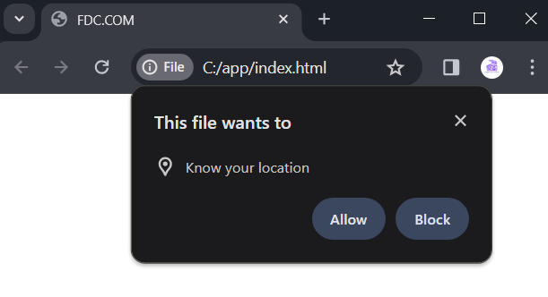

Web API Adăugătoare.
API de Geolocalizare.
Cu ajutorul API-ului de Geolocalizare putem obține în codul JavaScript date despre poziția geografică a
utilizatorului. Pentru a lucra cu API-ul de Geolocalizare, obiectul navigator
definește proprietatea geolocation, care reprezintă tipul Geolocation.
Pentru a obține poziția, la obiectul Geolocation se aplică metoda getCurrentPosition():
|
getCurrentPosition(success)
getCurrentPosition(success,
error)
getCurrentPosition(success, error, options)
|
Metoda poate accepta până la trei parametri:
- succes: funcția care este
apelată la determinarea cu succes a coordonatelor utilizatorului
- eroare: funcția care este
apelată în cazul apariției unei erori
- opțiuni: parametri suplimentari de
configurare
Deoarece poziția este determinată asincron, ca prim parametru succes în metoda este transmisă o funcție de callback,
care este apelată de îndată ce poziția este determinată cu succes. Ca parametru în această funcție de callback
este transmis obiectul GeolocationPosition. Proprietatea
sa coords reprezintă tipul GeolocationCoordinates, proprietățile căruia de fapt
stochează coordonatele utilizatorului:
- latitude: latitudine
geografică
- longitude: longitudine
geografică
- altitude: altitudine deasupra nivelului
mării în metri
- speed: viteza cu care se deplasează
utilizatorul (de exemplu, dacă merge pe jos sau se deplasează cu transportul)
- accuracy: acuratețea
determinării latitudinii și longitudinii în metri
- altitudeAccuracy: acuratețea
determinării altitudinii deasupra nivelului mării în metri
- heading: direcția în care este
orientat dispozitivul utilizatorului. 0 grade corespunde nordului, iar direcția este
determinată în sensul acelor de ceasornic (aceasta înseamnă că estul este
egal cu 90 de grade, iar vestul - 270 de grade). Dacă viteza (proprietatea speed) este egală
cu 0, această proprietate este egală cu NaN. Dacă dispozitivul nu poate furniza
informații despre direcție, această proprietate este egală cu zero.
De exemplu, să obținem datele geografice ale utilizatorului:
|
function success(position) {
console.log("Latitudine:
", position.coords.latitude);
console.log("Longitudine:
", position.coords.longitude);
console.log("Altitudine:
", position.coords.altitude);
console.log("Viteza de
deplasare: ", position.coords.speed);
console.log("Acuratețe: ", position.coords.accuracy);
console.log("Direcție: ",
position.coords.heading);
};
navigator.geolocation.getCurrentPosition(success);
|
Trebuie să luăm în considerare că, în browsere,
există o politică de securitate care, atunci când se apelează metoda geolocation.getCurrentPosition(), afișează un mesaj
utilizatorului, în care acesta poate confirma trimiterea coordonatelor geografice.

Obținerea informațiilor despre eroare.
Dar dacă utilizatorul refuză să ofere acces la datele geografice
în browser, va fi activată funcția de eroare, care este transmisă ca al doilea
parametru. Această funcție primește informații despre eroare sub forma unui obiect
GeolocationPositionError. Prin proprietatea message se
poate obține mesajul de eroare. În plus, prin proprietatea code
se poate obține codul erorii, care poate avea următoarele valori:
- 1 (PERMISSION_DENIED): lipsesc permisiunile pentru obținerea
datelor geografice
- 2 (POSITION_UNAVAILABLE): nu s-a putut stabili
poziția
- 3 (TIMEOUT): timpul permis a expirat înainte de
obținerea poziției utilizatorului
Aplicăm handlerul de eroare:
|
function successHandler(position) {
console.log("Latitudine:
", position.coords.latitude);
console.log("Longitudine:
", position.coords.longitude);
};
function errorHandler(error) {
console.log(error.message);
// afișăm mesajul de eroare
console.log(error.code); // afișăm codul
erorii
}
navigator.geolocation.getCurrentPosition(successHandler,
errorHandler);
|
Și în cazul în care permisiunea pentru obținerea datelor
lipsește, vom obține următorul output în consolă:
Urmărirea schimbării poziției.
Metoda watchPosition() a
obiectului Geolocation permite înregistrarea unei
funcții-handler, care va fi apelată automat de fiecare dată când se schimbă
poziția dispozitivului. Această metodă acceptă aceleași parametri ca
și getCurrentPosition():
|
watchPosition(success)
watchPosition(success,
error)
watchPosition(success, error, options)
|
Ca rezultat, metoda returnează un identificator, care poate fi transmis
metodei clearWatch() a obiectului Geolocation
pentru oprirea urmăririi. De exemplu:
|
<!DOCTYPE html>
<html>
<head>
<meta charset="utf-8" />
<title>FDC.COM</title>
</head>
<body>
<button id="btn">Stop
watching</button>
<script>
function
successHandler(position) {
console.log("
Latitudine: ",
position.coords.latitude);
console.log("Longitudine: ",
position.coords.longitude);
};
function errorHandler(error) {
console.log(error.message);
}
const geolocation =
navigator.geolocation;
const watchID = geolocation.watchPosition(successHandler,
errorHandler);
// la apăsarea butonului, oprim urmărirea
poziției
document.getElementById("btn").addEventListener("click",
()=>geolocation.clearWatch(watchID));
</script>
</body>
</html>
|